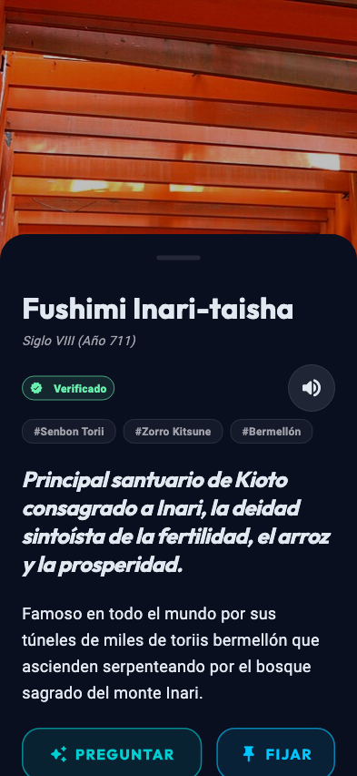
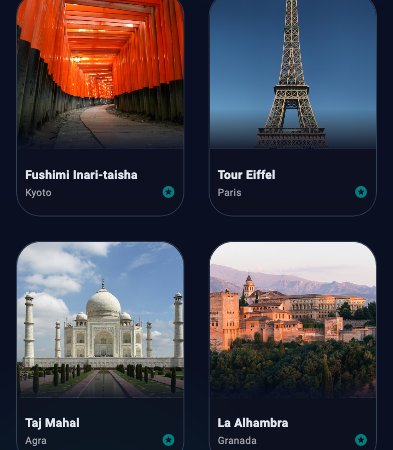
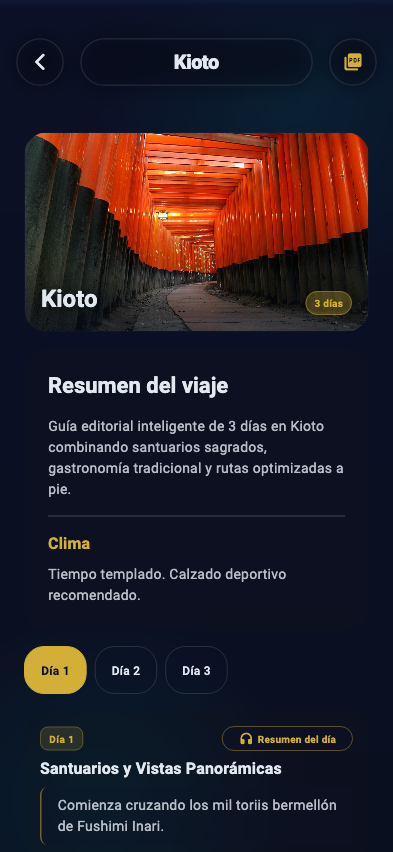
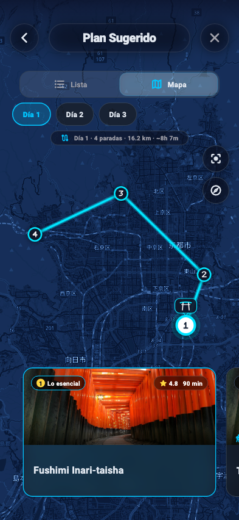
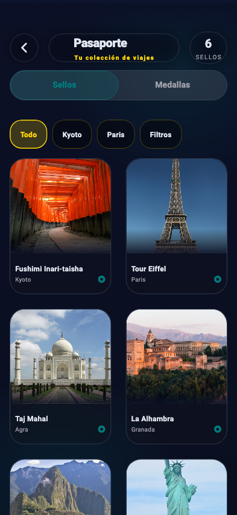

Apunta tu cámara.
Descubre la historia.
Apunta a cualquier monumento, escultura o callejón histórico. Tourist Lens lo reconoce en tiempo real y narra su historia en segundos — antes de que bajes el teléfono.


Diseñado con precisión Apple.
Cada pantalla, transición y elemento visual fue concebido para sentirse fluido, intuitivo y estricto con la privacidad de tus datos.
Reconocimiento en 0.4 segundos. Confianza real.
Apunta tu lente a monumentos, esculturas o fachadas emblemáticas. Con IA multimodal de visión, Tourist Lens te entrega contexto riguroso con índice de precisión verificado.
Narrado en 8 idiomas.
Descubre el contexto cultural e histórico con voz natural en tu lengua materna y sin retrasos de traducción.
Colecciona cada lugar descubierto.
Consigue sellos digitales ilustrados con coordenadas geográficas y fecha de visita para cada monumento del mundo.

Planes editoriales de varios días.
Olvídate de horas organizando rutas. El Asistente IA agrupa los mejores puntos de interés en secuencias lógicas a pie, con tiempos calculados, clima y briefing auditivo matutino.

Cuatro pilares de tu travesía.
Alterna entre los módulos de Tourist Lens y descubre cómo te acompaña en cada momento del camino.
Identifica cualquier monumento al instante.
Apunta al patrimonio que tengas delante. Tourist Lens reconoce el lugar sin titubeos, revelando cronología, curiosidades históricas y permitiéndote conversar con la IA para resolver cualquier duda.
-
Encuadre Óptico 1x / 2x / 5x: Haz zoom a relieves lejanos sin perder definición.
-
Narración Fundamentada: Datos históricos contrastados sin invenciones ni rellenos.
-
Pregunta lo que quieras: Toca 'Preguntar a la IA' para consultar accesos, anécdotas o leyendas.
Crea tu ruta personalizada en tres pasos.
Indica tu ciudad de destino, los días de estancia y tu estilo de viaje. La guía genera un itinerario editorial que combina monumentos esenciales con paseos inolvidables.
-
Resumen Editorial Diario: Clima previsto, consejos de calzado y briefing en voz.
-
Paradas Optimizadas: Ordenadas geográficamente para no dar rodeos innecesarios.
-
Exportación en PDF: Descarga tu itinerario maquetado para consultarlo sin conexión.
Tu ruta proyectada en alta definición.
Visualiza el recorrido planificado y cada foto capturada sobre un mapa oscuro elegante. Los números de parada, kilómetros y tiempos de caminata permanecen siempre claros.
-
Paradas Numeradas: Hitos claros (1, 2, 3...) para seguir tu día sin perderte.
-
Tarjetas de Lugares: Desliza las fichas inferiores para centrar el mapa en cada punto.
-
Optimizado para Batería: Estilo vectorial nocturno pensado para pantallas OLED.

Un diario vivo de tus aventuras.
Colecciona insignias conmemorativas y sellos de pasaporte por cada destino visitado en el mundo. Desde la Torre Eiffel o La Alhambra hasta los templos de Kioto.
-
Sellos Artísticos: Diseños únicos para monumentos de valor patrimonial.
-
Filtros por Ciudad: Agrupa tus recuerdos (Kioto, París, Roma, Agra, Granada...).
-
Cifrado al 100%: Todo tu historial permanece seguro en tu propio dispositivo.

Privacidad, por diseño.
Tourist Lens está construido sobre el principio fundamental de Apple: lo que pasa en tu dispositivo se queda en tu dispositivo. Nunca vendemos tu ubicación ni usamos tus fotos privadas para entrenar modelos.
Filtro Edge en el Dispositivo
Cada imagen es analizada localmente antes de cualquier envío. Solo se procesan monumentos turísticos relevantes.
Canal Cifrado con Certificate Pinning
Las conexiones viajan exclusivamente mediante endpoints con certificados fijados para prevenir interceptaciones.
Cifrado en Secure Enclave
Tus sellos, fotos y notas se cifran con claves AES-256 custodiadas en el enclave seguro de tu propio hardware.
Pases Honestos por Tiempo
Sin suscripciones sorpresa ni renovaciones automáticas. Adquiere pases por tiempo únicamente cuando viajas.